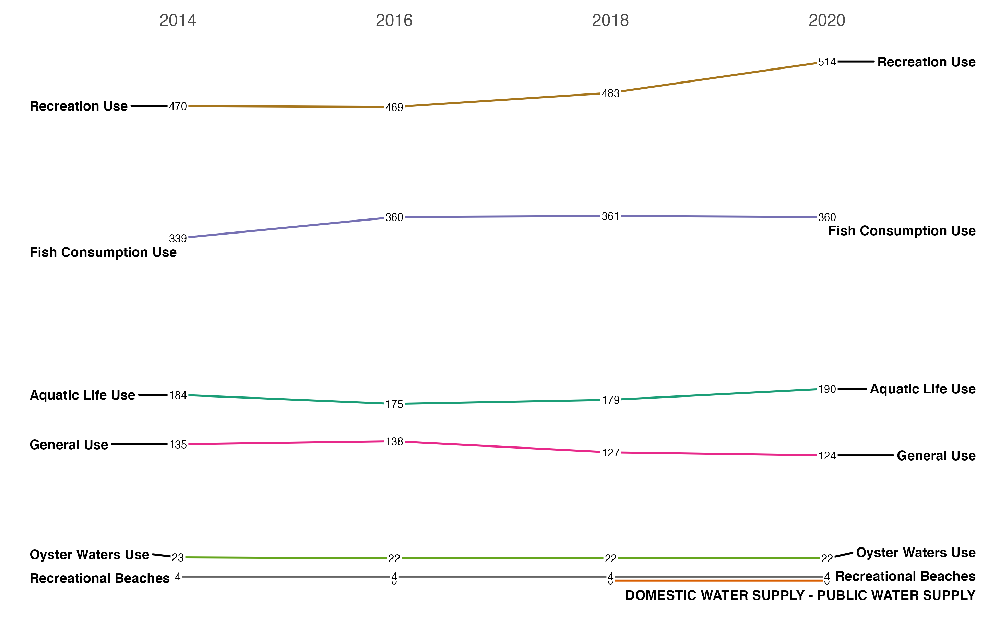

vignettes/articles/Example---Tracking-Impaired-Waters.Rmd
Example---Tracking-Impaired-Waters.Rmd
library(rATTAINS)
library(dplyr)
#>
#> Attaching package: 'dplyr'
#> The following objects are masked from 'package:stats':
#>
#> filter, lag
#> The following objects are masked from 'package:base':
#>
#> intersect, setdiff, setequal, union
library(ggplot2)
library(ggrepel)A simple example utilizing ATTAINS data is tracking the changes in waters assessed as “impaired” from year to year. We can access this data using the state_summary() function that will provide aggregated information about assessment decisions by organization identifier. First we need to find out what organization identifier to use:
domain_values(domain_name = "OrgStateCode") %>%
filter(code == "TX")
#> # A tibble: 2 × 4
#> domain name code context
#> <chr> <chr> <chr> <chr>
#> 1 OrgStateCode TX TX TCEQMAIN
#> 2 OrgStateCode TX TX EPAIt appears we can use TCEQMAIN as a identifier code if we are interested in assessment summaries in the state of Texas. I’m interested in the three most recent assessment cycles. Unfortunately, we can use multiple values in the reporting_cycle argument so we need to either loop through the calls or do some row binding. Since it is just a few years, I will just bind the rows.
df <- state_summary(organization_id = "TCEQMAIN", reporting_cycle = "2020") %>%
bind_rows(state_summary(organization_id = "TCEQMAIN", reporting_cycle = "2018")) %>%
bind_rows(state_summary(organization_id = "TCEQMAIN", reporting_cycle = "2016")) %>%
bind_rows(state_summary(organization_id = "TCEQMAIN", reporting_cycle = "2014"))Next summarize the counts of “causes” by reporting cycle and designated use:
df_uses <- df %>%
tidyr::unnest(parameters) %>%
mutate(reporting_cycle = as.numeric(reporting_cycle),
cause_count = as.numeric(cause_count)) %>%
group_by(reporting_cycle, use_name) %>%
summarise(count = sum(cause_count, na.rm = TRUE))
#> `summarise()` has grouped output by 'reporting_cycle'. You can override using the `.groups` argument.Finally, plot with some ggplot and ggrepel magic:
ggplot(df_uses, aes(x = reporting_cycle, y = count, group = use_name)) +
geom_line(aes(color = use_name)) +
geom_text_repel(data = df_uses %>% filter(reporting_cycle==2020),
aes(label = use_name),
size = 2.5,
hjust = "left",
fontface="bold",
direction= "y",
nudge_x = 5) +
geom_text_repel(data = df_uses %>% filter(reporting_cycle==2014),
aes(label = use_name),
size = 2.5,
hjust = "right",
fontface="bold",
direction= "y",
nudge_x = -5) +
geom_label(aes(label = count),
size = 2,
label.padding = unit(0.05, "lines"),
label.size = 0.0) +
scale_x_continuous(position = "top",
breaks = c(2014,2016,2018,2020),
expand = expansion(mult = 0.25)) +
scale_color_brewer(palette = "Dark2") +
theme_bw() +
theme(axis.ticks = element_blank(),
axis.title.y = element_blank(),
axis.title.x = element_blank(),
axis.text.y = element_blank(),
legend.position = "none",
panel.border = element_blank(),
panel.grid.major.x = element_blank(),
panel.grid.minor.x = element_blank(),
panel.grid.major.y = element_blank(),
panel.grid.minor.y = element_blank())
The most difficult part of utilizing this data is exploring what is included and reported by various states. Each state provides different amounts of data and often has unique codes or information under the same variable name. Having some state or tribal specific context is probably useful in interpreting the information included in the data. Also note that I do not have documentation about the specific meanings of the various output variables because that information is not provided by EPA.